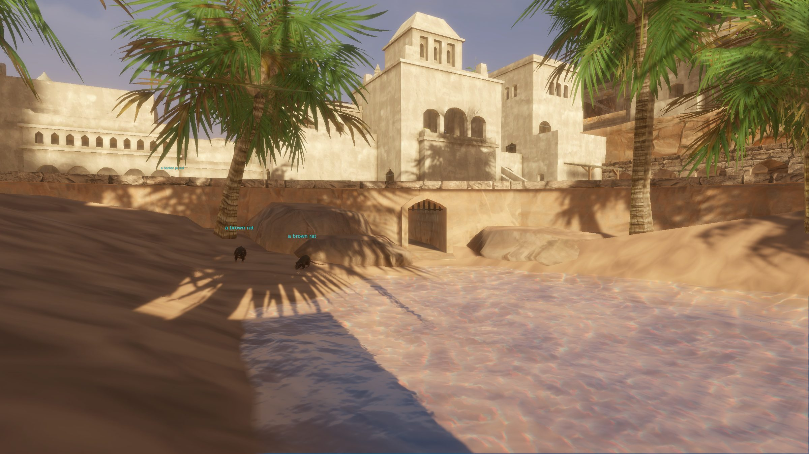

Night Harbor Sewers
Night Harbor Sewers is a series of sewers and tunnels beneath the streets of Night Harbor.
Map

Named mobs
| Named | Lvl | Race / class | Where | Known loot (hover) |
|---|---|---|---|---|
| Example Item | - | - | ||
| Example Item | - | - |
Mobs & NPCs (camps by level)
Rows with a level are huntable camps; rows without are usually town NPCs or not yet documented.
| Name | Lvl | Race | Class | Where | Notes |
|---|---|---|---|---|---|
| a large sewer rat | 3 | Rat | - | - | |
| a mugger | 4 | Human | - | - | |
| a large rat | - | Rat | - | - | |
| a watersnake | - | Snake | - | - | |
| a wererat apothecary | - | Wererat | - | - |
Quests
| Quest | Reward | Giver | Min lvl |
|---|---|---|---|
| Example Quest Name | Example Reward | Example Quest Giver | - |
| Example Quest Name | Example Reward | Example Quest Giver | - |
Dangers
- fact Monster types (wiki): Muggers (Human), Rats, Wererats, Snakes.
Travel (wiki)
- from the North gate : take the teleporter to The Docks, go straight to the bridge with two sphinxes, walk down to the river on the right and follow it until you reach the end of the river where the entrance to the sewers is.
fact Listed in the wiki zone infobox; boat and portal stops are as written there.